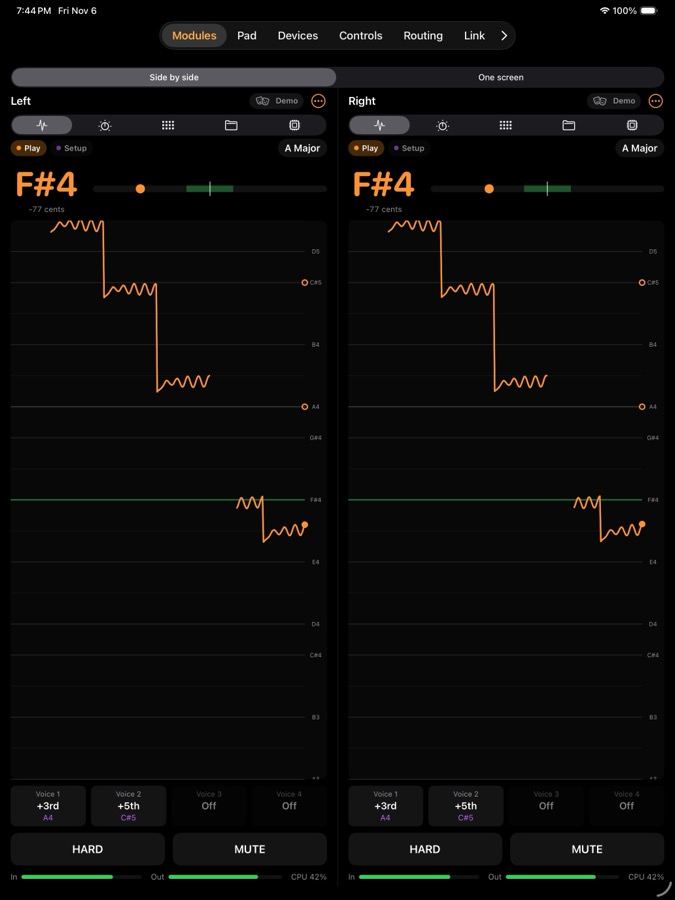
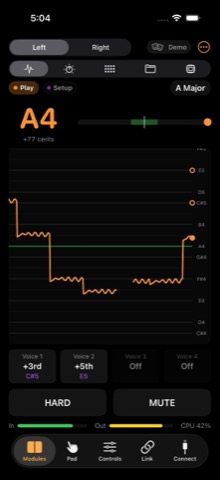
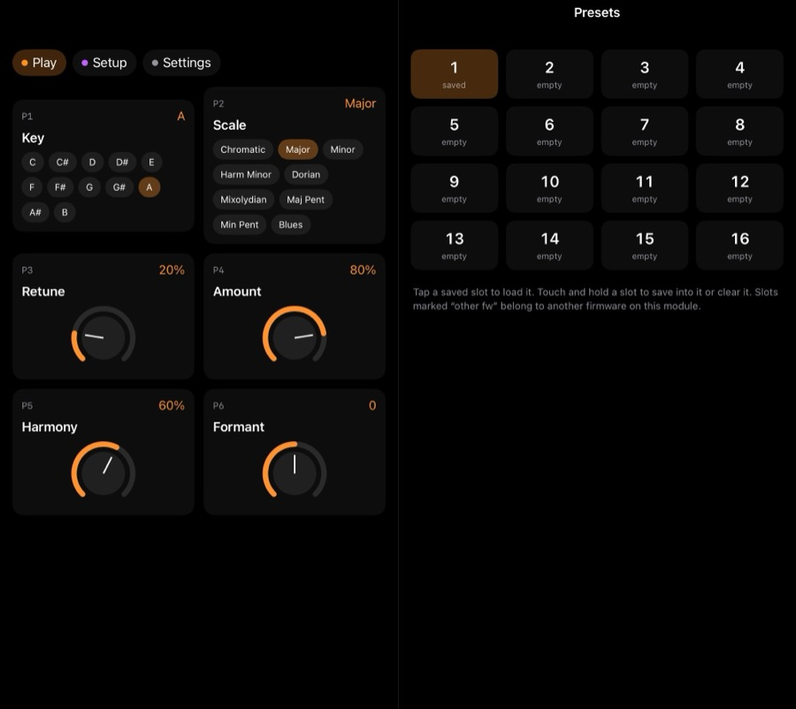
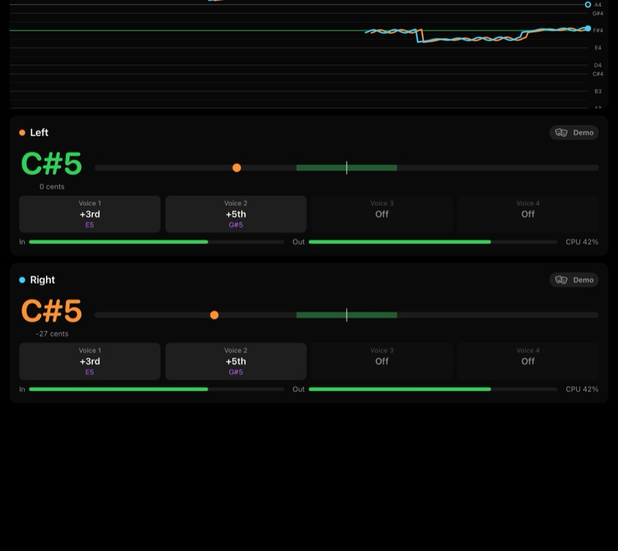
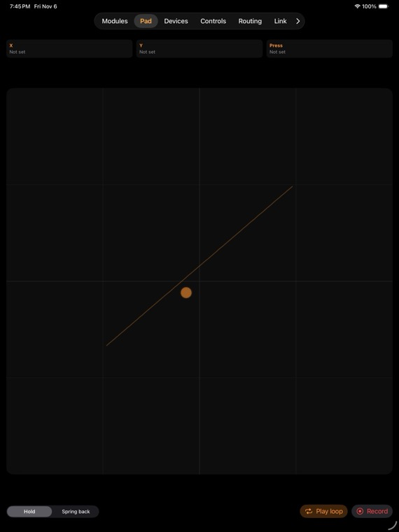
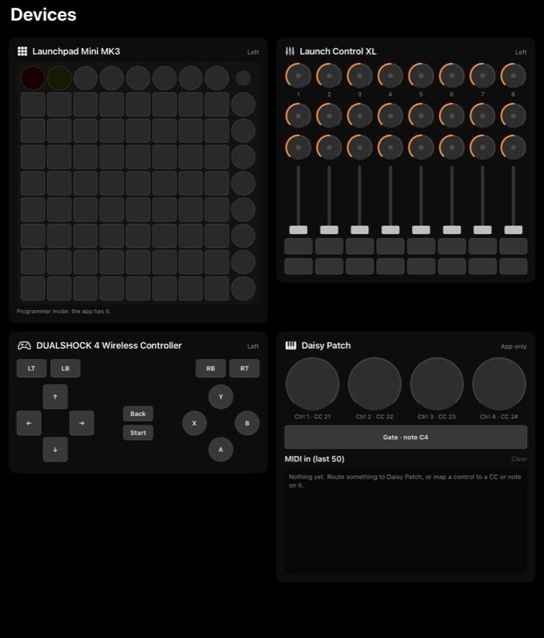
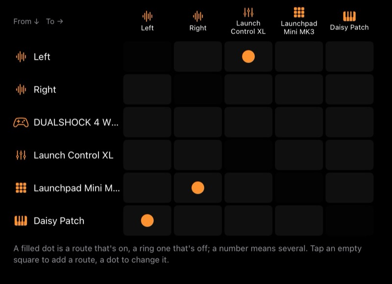

Alchemy Lab · iPhone and iPad · version 0.1
Your phone or iPad as a screen and controller for the Alchemy Lab. See Belt's tuning, play its knobs, move presets and files, plug controllers into a hub, and run two modules as one instrument.
Beta So far the app has run in the iOS Simulator, against pretend modules and two emulated ones running the real firmware. It has not yet been used with a real module. Anything marked Untested below is built but unproven on hardware.
The app talks to the module over its front USB-C, in a USB mode called Phone. You need a Belt build that includes it. Phone mode isn't in a Belt release yet, so check you have a build that has it before you start: the USB port setting will offer Phone if it does.
| USB port | What the front USB-C does |
|---|---|
| Mac | The default. For the web programmer and a computer. |
| Launchpad | The module hosts controllers itself. |
| Audio | A USB audio interface. |
| Phone | The app: screen, knobs, files, firmware, and controllers on the phone's hub. |
| Phone+Audio Untested | All of Phone, plus 2-in, 2-out audio at 48 kHz on the same cable. With two modules, only one can carry audio. |
To get back to Mac mode for one boot, hold B1 while powering up. The setting is shared across firmwares on the card, so switching firmware keeps it.
Connect appears by itself until a module is connected. After that it's a tab. On an iPad in portrait, tap > at the end of the tab bar to reach it.
Plug one module straight into the phone, or two through a USB-C hub. There's nothing to tap: a device with "alchemy" in its name connects by itself. The app tells modules apart by a number each one reports, so it doesn't matter which hub port they're in.
The modules take no power from USB. Use a hub with a USB-C PD power-in port for the hub and any controllers. At 30 W or more it also charges an iPad. Two identical modules on one hub are Untested.
Fit a USB-host Bluetooth MIDI adapter, such as a CME WIDI Uhost, to each module's USB-C. Then tap Pair a Bluetooth MIDI adapter. If the adapter doesn't connect by itself, tap it under Other MIDI devices. Once it has answered, it connects by itself next time. One adapter on a hub serving two modules doesn't work.
| USB | Bluetooth | |
|---|---|---|
| Screen updates per second | 15 | 6 |
| Knob writes per second, at most | 60 | 20 |
| File speed | about 60 KB/s | about 4 KB/s |
Tap Try one demo module or Try two demo modules for pretend modules inside the app, with fake singing, a saved preset and a small card. On a phone these are further down the page. Stop the demo ends it. Connecting a real module stops the demo too.
For developers. The Alchemy Lab emulator runs real firmware on a Mac. Start it with --usb phone --hostlink 5071, and 5072 for a second one, then tap Connect to the module emulator. In the Simulator the host is 127.0.0.1. On a real device, type the Mac's address. The app retries every 2 seconds until the emulator answers. Firmware switching lists nothing here.
With two modules, the lower unit number is Left and the other Right. The round … button at the top of each module shows its firmware, plus Rename… and Disconnect. A name stays with that module on any cable or adapter.
After Disconnect, or if a device never answers, the app leaves it alone. Tap it under Other MIDI devices to try again, or relaunch the app.
iPad: two modules side by side, each with its own controls. iPhone: a Left / Right switch at the top.


Tap to latch on or off. A lock icon shows it's latched. For on-only-while-held, hold past about half a second. A shorter press also latches.
MUTE here is a plain mute. It isn't the panel's long B2 press, which is Belt's HOLD. HOLD has no control in the app, so use the panel.
A firmware that doesn't report Belt's state gets a copy of the panel instead: drag a ring up or down to turn its knob, 220 points for full travel. Button presses work only if the firmware allows them.
Every knob and setting, by page, using the chips at the top. Each page has six positions, P1 to P6, like the panel. Drag a dial up to raise it, or tap one of the named choices. What it does opens the help text where the firmware provides it.
You can't change USB port here, because that would cut the phone off.

Sixteen slots, marked saved, empty or other fw, which means another firmware owns that slot. Tap a saved slot to load it. Touch and hold a slot for Save current sound here, Load and Clear.
Clear doesn't ask first. Saving over a used slot does. Pull down to refresh after saving on the panel.
The module's SD card. Tap a folder to open it and Up to go back. The buttons at the top left are New folder, Record and Add files. Swipe a file or folder to delete it, which doesn't ask first. Locked files stay put.
Files arrive in one piece or not at all, so a pulled cable leaves no half-written file. For big batches, a USB-C card reader is much quicker. The app can't download files from the card or rename them.
Record a clip. Record captures up to 30 seconds from the phone's mic as 48 kHz mono WAV. Listen plays it back, and you can then name it and save it to the folder you're in. A 5-second clip takes about 8 seconds over USB and about 2 minutes over Bluetooth. Belt doesn't play samples, so clips are for firmwares that do.
Lists the .bin files in /alchemy on the card. Tap one, then Write it and reboot. The module checks, erases, writes, verifies and reboots, and the steps show as it goes. Don't unplug its power while it writes. Add a .bin copies a file to the card.
Picking the firmware already running changes nothing. If the new firmware has no Phone mode, the phone loses the module. Switch back from the panel, a Mac or the card.
Modules tab, with two modules: One screen at the top.
Both pitch traces on one graph, Left in orange and Right in cyan, on Left's note lanes. Below that is a tuner, voices and levels for each. This view is for watching only: use Side by side or Each module for the buttons.

A square you play with one finger or an Apple Pencil, giving X, Y and pressure. The chips at the top show what each one drives. Set those on the Controls tab.
Apple Pencil gives true pressure. A finger gives contact size, so pressing flatter reads harder.

Each source can drive one knob on either module, over any part of its range, and can also send MIDI. Tap a source, pick a knob, then set From and To. Setting From higher than To turns it round, and Flip swaps them. If two sources share a knob, the later one wins.
| Source | Moved by |
|---|---|
| Pad X, Pad Y, Pressure | The Pad tab. |
| Tilt, Roll, Turn | Moving the device, once Use tilt and turn is on. Tilt leans the top away or towards you, roll leans it sideways, turn spins it flat on a table. Zero makes the current position the middle. Full sweep is 10° to 90° either side, 40° by default. |
| Mic level, Mic pitch | The phone's mic, once Use the mic is on. Level follows loudness. Pitch follows the note up to about B5. |
The mic only moves knobs. To sing into Belt, cable the phone's audio out to the module's input. Tilt and mic switch off when the app relaunches.
A Launchpad Mini MK3, a Launch Control XL, a gamepad or any MIDI device can share the hub with the modules. Each one's menu sets where it goes:
| Setting | What happens |
|---|---|
| Left, Right, Both | It plays that module as in the module's own Launchpad mode, with its LEDs. With Both, the LEDs come from the first module. Not offered for other MIDI gear. |
| App only | Only what you've mapped below. The default for other MIDI gear. |
| Off | Ignored, and it can't be learned. |
Only the Mini MK3 and the original XL get this treatment. A newer Launchpad or XL counts as plain MIDI. On iPad, set a Haute42 to PS4 mode, because iPadOS doesn't recognise its XInput mode.
Targets are any knob on either module, the Pad, sharing the key, splitting harmonies, HARD, mute, next or previous preset, or a MIDI CC or note on another device. A button can Hold or Latch. A mapped control isn't sent to the module as well.
The Device picker starts on the first device that isn't the one you learned from, so check it before saving. Mappings are kept by controller name and come back when you plug it in again. Mapped in the app lists them. Swipe to remove.
iPad: Devices tab, all four at once. iPhone: Controls > On-screen devices > Play them, one at a time. Demo and emulator only.
A Launchpad Mini MK3, Launch Control XL, gamepad and Daisy Patch on the screen, for trying controllers, Learn and routes without any hardware. They reach the app the way real ones do, under the real ones' names, so what you set up by device name carries over. Anything tied to a demo or emulated module doesn't, because modules are kept by unit number.

Learn at the top of the page works in place: the devices stay visible until a control moves. To use the names your real gamepad and Daisy Patch show, set them under Controls > On-screen devices.
iPad: Routing tab, as a List or a Matrix. iPhone: Controls > MIDI routing, list only.
The phone is the hub's only host, so everything between devices goes through the app and no TRS cables are needed. A route sends any source to any destination. Routing pauses while the app is in the background.

In the list, tap a route to edit it, use its switch to turn it off, or swipe to remove it. Held notes are let go when a route goes away. A route that would feed back into itself is refused, even through a route that's switched off.
| From | Options |
|---|---|
| A MIDI device | What passes: Notes, CC, Pitch bend, Aftertouch, Program change, Clock and transport. In channel, Out channel, and Transpose up to ±48. |
| A gamepad | Buttons play notes, rising from a first note, C2 by default, in this order: up, down, left, right, start, back, L3, R3, LB, RB, home, A, B, X, Y, LT, RT. Gamepads only send. |
| A module | Sung note, Harmony voices too, and to a device, knobs as CCs. It follows a few tens of milliseconds behind. |
A module plays routed notes as a keyboard, with CC 64 as its sustain pedal. It holds up to 10 notes on 4 voices, and a new note takes the oldest note's voice. In Harmony mode a held note replaces a voice's interval. In Target mode the newest held note is the correction target. Other CCs reach it only through mappings you've learned.
To reach both modules, make a route to each. A route has no Both destination.
A controller set to Left, Right or Both, or a mapped control, isn't routed as well, so nothing plays twice. If a route from one seems silent, set it to App only or turn on Include mapped controls in the route.
SysEx is never routed.
Link tab, once two modules are connected.
The app is the go-between. The modules never talk to each other directly.
Clock, gates and audio between the modules belong on patch cables. Through the phone they arrive a few milliseconds late over USB, and 25 ms or more over Bluetooth.
The app includes an Audio Unit MIDI processor called Alchemy Lab: Alchemy Screen, for AUM, Loopy Pro and other hosts. It loads in the Simulator but hasn't been tried in a host app yet.
It gives each module, A and B (the app's Left and Right), 14 automatable parameters. All incoming MIDI also passes to the host's MIDI output. A CC on any channel moves the matching parameter across its whole range.
| Parameter | Range | CC, module A | CC, module B |
|---|---|---|---|
| Key | 12 notes | 20 | 52 |
| Scale | 9 scales | 21 | 53 |
| Retune | 0–100% | 22 | 54 |
| Amount | 0–100% | 23 | 55 |
| Harmony | 0–100% | 24 | 56 |
| Formant | −100 to +100 | 25 | 57 |
| Voice 1–4 | 12 intervals | 26–29 | 58–61 |
| Doubler | 0–100% | 30 | 62 |
| Spread | 0–100% | 31 | 63 |
| HARD | Off, on (64 and up) | 32 | 64 |
| Mute | Off, on (64 and up) | 33 | 65 |
Disconnect the module in the app, or close the app, while a host uses the plug-in. Both can hold a module at once, and that can cause occasional failed writes.
The plug-in finds modules by name, so keep "Alchemy" in the name of any Bluetooth adapter. A module that connects after a session loads keeps its own settings, and the parameters follow it. Its output bus is silent. Audio from a module reaches iOS by an audio interface or Phone+Audio.
The app works in the foreground only. Leave it and routing pauses, a Launchpad goes back to Live mode, an XL's LEDs go off, and modules are told their controllers have gone.
Module names, routes, mappings, Link settings, controller settings and emulator settings. Not kept: Hold or Spring back, the recorded loop, tilt and mic switches, and which view each module was on.
| Message | What to do |
|---|---|
| A module doesn't appear | Check its USB port is on Phone and power it up again. Then tap it under Other MIDI devices. Giving up on a silent device can take about 20 seconds. |
| This will be slow | A file that will take a while over this link. Use a cable or card reader, or Send it anyway. |
| No SD card in the module. | Fit a card. Samples and Firmware need one. |
| That change didn't reach the module | A knob write failed. Try again and check the connection. |
| It stopped (…). Nothing was booted. | A firmware switch failed. If it stopped while writing, switch again before you power the module off. |
| This module's firmware doesn't play notes | A route can't play on this firmware. Update to a build with Phone mode that supports notes. |
| CCs are dropped: none learned | Only CC 64 reaches a module by route. Learn a mapping for anything else. |
| Firmware without controller support | Update the firmware to forward controllers. |
| Can't add that route | It would loop, even through a route that's switched off, or the destination is a gamepad. |
| Allow the microphone in Settings | Go to Settings > Privacy > Microphone and allow Alchemy Screen. |